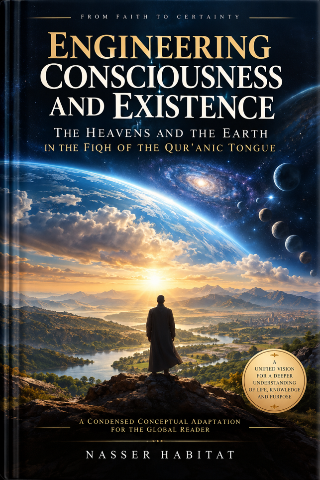

Nasser Ibn Dawood

Text extracted from the author-supplied Word edition; consult the original source.
Preparing the reader…
ENGINEERING
CONSCIOUSNESS AND EXISTENCE
Heaven and Earth in the Fiqh of the Qur’anic Tongue
A Condensed Conceptual Adaptation
Nasser Ibn Dawood
From the horizons to the self, from belief to certainty.
Condensed English edition for the international reader
I. The Global Knowledge Manifesto
Knowledge is a universal right. The author firmly believes that wisdom should not be locked behind paywalls or language barriers.
• Global Access Policy: All books in this library are available for free in multiple digital formats (PDF, HTML, DOCX, TXT).
• The Digital Library: As of early 2026, the collection hosts 68 volumes (34 in Arabic and 34 in English), fully optimized for AI-assisted research and digital archiving.
• Official Platforms: Main Website: nasserhabitat.github.io/nasser-books/
• GitHub: nasserhabitat/nasser-books
II. Translator’s Note: The Bridge of Meaning
This English edition is a condensed conceptual adaptation. It is not a word-for-word translation, but rather an "extraction of essence." It presents the core philosophical framework in accessible English, omitting the exhaustive linguistic debates and classical references found in the original Arabic text.
For the academic researcher: The original Arabic version remains the primary source for comprehensive linguistic analysis, detailed exegesis (Tafsir), and the complete bibliography.
A further clarification is essential for the present edition. The Arabic work uses the expression Fiqh al-Lisan al-Qur’ani, rendered here as “Fiqh of the Qur’anic Tongue.” In this context, fiqh is not restricted to legal jurisprudence. It refers to disciplined understanding: tracing Qur’anic usage, attending to roots, contexts, structural relations, contrasts, and recurring patterns, then testing whether a proposed meaning can remain coherent across the text. The word “tongue” is retained because the author treats Qur’anic language as an internally structured system rather than as a loose collection of interchangeable synonyms.
This adaptation also preserves a central methodological restraint of the Arabic book: the inner or existential reading does not cancel the physical meaning of Qur’anic images. Earth remains earth, heaven remains heaven, water remains water, stars remain stars. The contemplative layer is presented as a second level of reading built upon the outward level, not as a replacement for it. The purpose is to explore how the Qur’anic cosmos may also function as a grammar of consciousness.
Contents
• Introduction — The Two Worlds and the Journey to Certainty
• Part One — Earth, Heaven, and the Human Meeting Point
• Part Two — The Layered Structure of Existence
• Part Three — The Inner Orbit: Heart, Paradise, and Constriction
• Part Four — Signs of Guidance: Stars, Lamps, and Layers
• Part Five — Worship as a Laboratory of Integration
• Part Six — Corruption, Flood, Earthquake, and the Laws of Separation
• Part Seven — Witness, Awakening, and the Path of Certainty
• Conclusion — From Horizons to Selves
• Conceptual Glossary for the International Reader
Introduction — The Two Worlds and the Journey to Certainty
This book begins with a simple but far-reaching question: when the Qur’an speaks of heaven and earth, stars and water, rising and falling, building and spreading, is it only describing the physical world outside us? Or does the same language also train the human being to read an inner world of perception, conviction, desire, action, and moral consequence?
The argument developed here is that the Qur’anic cosmos can be read on two coordinated registers. The first is the world of the horizons: the visible created order, with earth, heaven, water, stars, mountains, motion, stability, growth, ruin, and renewal. The second is the world of the selves: the inward field in which knowledge is received, beliefs become settled, intentions are formed, choices are made, and human beings rise toward clarity or fall into confusion. These two registers are not treated as rivals. They are mirrors. The external world is not dissolved into psychology, and the inner world is not reduced to matter. Rather, the reader is invited to observe structural correspondences between them.
The key methodological word is tadabbur: sustained contemplation that follows a matter to its consequences and connections. This approach begins by preserving the apparent meaning of a verse, then asks whether the Qur’an itself permits a deeper functional relation to emerge across contexts. It therefore resists two opposite reductions. The first is a narrow material reading that allows cosmic verses to say nothing beyond physical description. The second is an uncontrolled symbolic reading that empties the verses of their real-world referents. The book seeks a middle discipline: outward meaning first, inner correspondence second, context throughout.
Within this architecture, heaven and earth become a fundamental pair. Heaven represents height, ordering, protection, command, and the arrival of life-giving provision. Earth represents settlement, receptivity, embodiment, testing, cultivation, and consequence. The human being stands where the two meet. Guidance descends; the human receives. Convictions settle; actions grow. What is above becomes meaningful only when it takes root below, and what is below remains barren if it closes itself to what gives it life.
The heart occupies the center of this inner world. In the book’s contemplative language, the heart is not merely the biological organ. It is the center of reception, discernment, turning, decision, and responsibility. A sound heart is open to truth and capable of integrating knowledge with action. A sealed heart is one in which repeated refusal hardens into incapacity. The drama of guidance is therefore not merely informational. It is architectural: what enters the inner world, where it settles, what it nourishes, and what it produces.